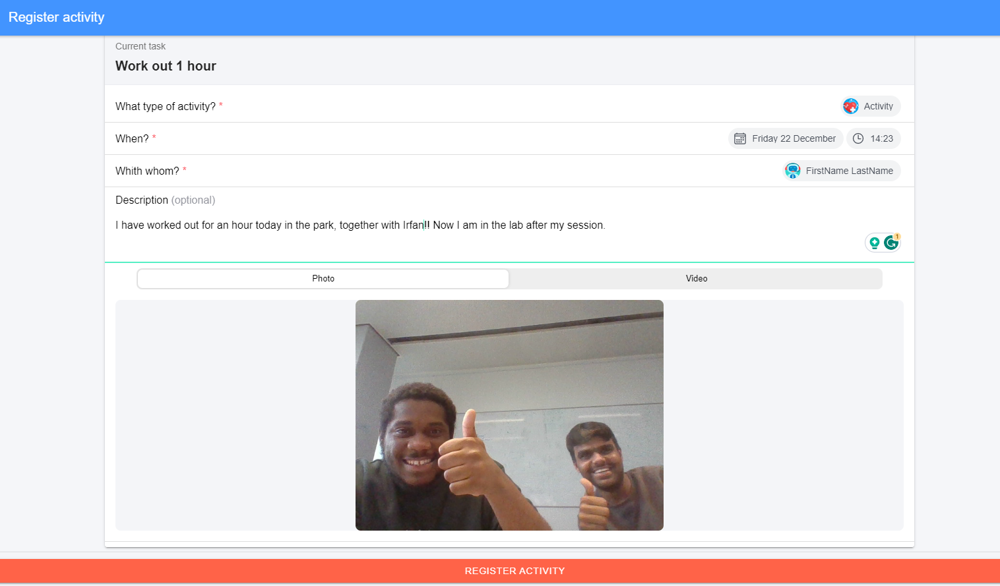

A structured framework designed to guide individuals through progressive stages of personal development. This guide provides an overview of how the Level System operates, its structure, and the rules governing participant progression.
Participants self report their progress on the goals using the web application see below for an example:
Participants have 15 days to complete all three levels before starting a break period of a week. If participants have not completed level 1 within 5 days or level 2 within 10 days or level 3 within 15 days, then the participant will be set back to the previous level.
The Level System provides a structured and progressive approach to personal development across social, cognitive, and physical dimensions. Participants navigate through levels, each presenting new challenges and opportunities for growth. Setbacks are seen as opportunities for renewed commitment and achievement. Best of luck on your journey through the levels!